From isolated worker training to mathematically verifiable, bit-for-bit reproducible model checkpoints in untrusted environments.
Core Research Question
How can independent entities collaboratively train deep neural networks without a central authority of trust, while systematically eliminating gradient poisoning attacks and IEEE-754 floating-point hardware divergence?
SDK & Extensibility: Orchestration via Controller, receipt verification, and proposed thesis roadmap.
SR
Student Researcher
Department of Distributed Systems & AI · Testbed: demo/verification-lab-2026-09-25
Problem & Motivation
Why Classic FedAvg Fails in Adversarial Settings
Three fundamental roadblocks to secure and verifiable federated learning.
1. Byzantine Poisoning
In standard Federated Averaging, a central parameter server blindly sums client updates:
wt+1 = wt + Σ (nk/n) Δwk
Adversaries can inject crafted gradient vectors with extreme magnitudes, permanently collapsing model weights or embedding backdoors.
2. Floating-Point Drift
IEEE-754 floating-point addition is non-associative across microarchitectures:
(a + b) + c ≠ a + (b + c)
Divergent GPU cores (Nvidia/AMD/Apple) produce bitwise discrepancies in least significant bits → SHA-256 hashes diverge → consensus breaks!
3. Absence of Verifiable Audit
Traditional frameworks offer zero cryptographic proof:
Which exact datasets participated?
Were valid client updates unfairly censored?
From which model checkpoint did gradients derive?
DeltaReduce solves this via InputSetCertificates (ISC).
Protocol Lifecycle
DeltaReduce: 6 Steps From Training to Checkpoint
The end-to-end pipeline of deterministic update consensus.
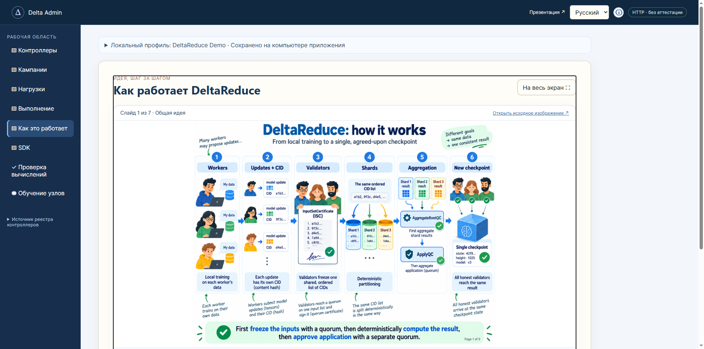
🔍 Click to inspect
The Two-Phase Consensus Axiom
«First freeze the inputs with a quorum (InputSetCertificate), then deterministically compute the result, then approve application with a separate quorum (ApplyQC).»
Sequential Execution Phases:
Workers: Autonomous local training on private datasets.
Updates + CID: Uploading model artifacts and computing cryptographic content hashes.
Validators & ISC: Byzantine quorum attests and freezes the canonical ordered ticket list.
Deterministic Shards: Shard allocation without domain cross-contamination.
Aggregation (QC): Partial shard reduction (AggregateRootQC) and apply quorum (ApplyQC).
New Checkpoint: Synchronous, byte-exact state transition across all honest participants.
Roles & Entities
Who Does What: Workers, Tickets & Validators
Clear boundary separation between local machine learning and Byzantine consensus.
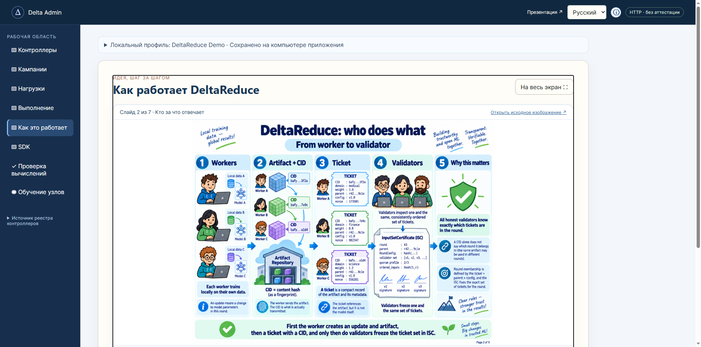
🔍 Click to inspect
Entity
Definition
Core Responsibility
Worker
Compute Node
Trains weights on private data. Emits binary blobs. Holds no voting rights in consensus.
Artifact
Binary Blob
Raw serialized weight matrices and optimizer vectors stored content-addressed.
CID
Content Hash (SHA-256)
Immutable cryptographic fingerprint of the artifact payload.
Ticket
Metadata Descriptor
Binds CID to data domain, contribution weight, parent checkpoint, and nonce.
Validator
Consensus Node
Verifies contracts and signs quorum certificates (ISC, AggregateRootQC, ApplyQC).
Why a CID Alone is Insufficient
The exact same weight tensor can be re-proposed across different rounds. A round is unambiguously defined solely by the context tuple: Ticket + Parent Checkpoint + RoundConfig + ISC.
Round Context
Ticket, Parent Checkpoint & RoundConfig
How DeltaReduce prevents state forking and ensures round context integrity.
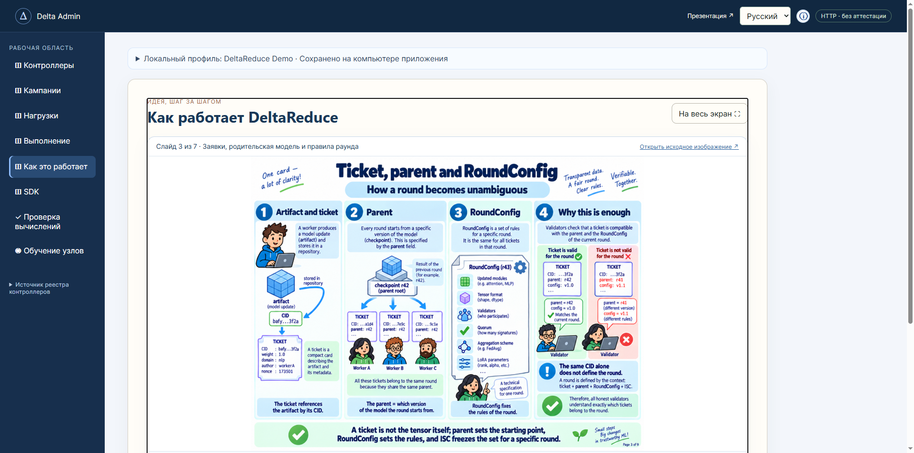
🔍 Click to inspect
Three Invariants for Ticket Admission:
Parent Model Invariant: The ticket's parent hash must strictly match the active checkpoint (e.g., r42). Gradients computed from stale parents (r41) are immediately rejected.
RoundConfig Invariant: Specifies target trainable parameters (LoRA adapters, attention heads), tensor shapes, numerical dtypes, active validators, and aggregation schemes.
InputSetCertificate (ISC): A quorum of validators signs the canonical ticket array S_r. No inputs may be added or removed after ISC issuance.
Formal mathematical proof guaranteeing safety against malicious network forks.
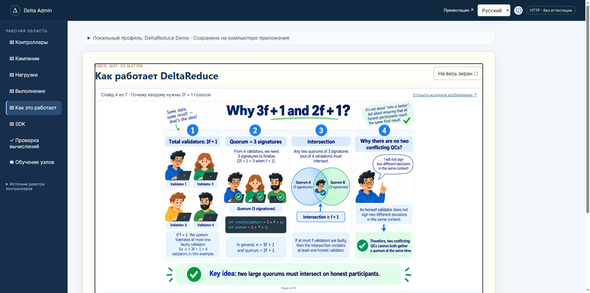
🔍 Click to inspect
Quorum Intersection Theorem
Suppose the system tolerates up to f Byzantine (arbitrarily malicious) nodes:
Total Validators: n ≥ 3f + 1
Quorum Size: q ≥ 2f + 1
The cardinality of the intersection between any two quorums Q1 and Q2:
|Q1 ∩ Q2| ≥ 2q - n = 2(2f + 1) - (3f + 1) = f + 1
Since at most f validators are Byzantine, the intersection inevitably contains at least one honest validator:
(f + 1) - f = 1!
Equivocation Defense (Fork-Proof)
Honest validators never sign two conflicting decisions in the same round context. Therefore, two conflicting certificates (QC A and QC B) cannot both collect a valid quorum simultaneously!
Deterministic Sharding
Shard Assignment: Largest Remainder Method
Domain isolation and bounded shard allocation without cross-contamination.
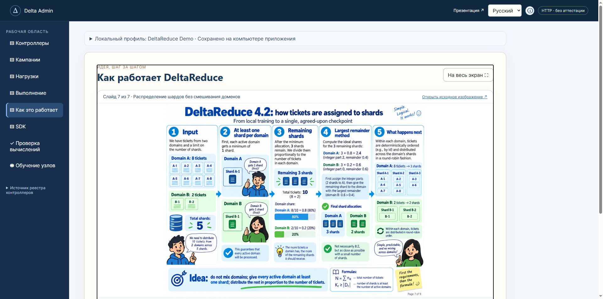
🔍 Click to inspect
The Domain Isolation Axiom
Tickets from different domains are never mixed inside the same shard. Shards: K ≥ |D|.
Worked Example (N = 10 tickets, K = 5 shards):
Inputs: Domain A = 8 tickets (80%), Domain B = 2 tickets (20%).
Base Reservation: Domain A → 1 shard, Domain B → 1 shard. Residual: 3 shards.
In the actual DeltaReduce engine, reduction avoids floating-point numbers completely. Tensors are quantized into INT64 numerators and denominators, guaranteeing absolute bitwise reproducibility across heterogeneous hardware.
Verification Lab
Verification Lab: 7 of 7 Empirical Checks Passed
Live execution of the pinned arithmetic reference engine on a 12-artifact synthetic workload.
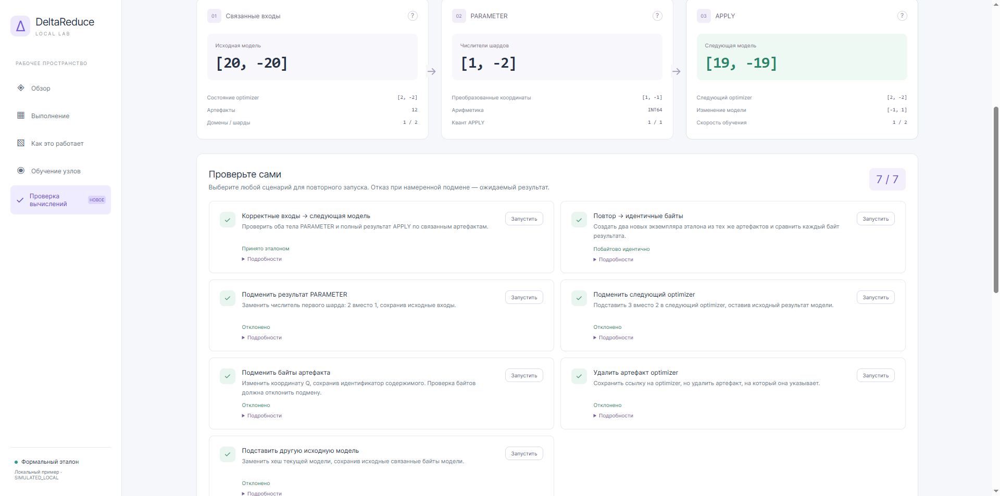
🔍 Click to inspect
Canonical Reference Pipeline Trace:
Baseline Model
[20, -20]
Optimizer State
[2, -2]
Shard Numerators (PARAMETER)
[1, -2] (denominators: 1)
Quantized Coordinates
[1, -1] (INT64)
Next Model State (APPLY)
[19, -19] (Learning Rate = 1/2)
Next Optimizer State
[2, -2]
Bitwise Reproducibility (BYTE-EXACT)
Re-running the reference pipeline against identical artifacts yields an explicit BYTE-EXACT IDENTICAL verdict. The computation SHA-256 hash matches 100%.
Adversarial Defense
Tampering Defense: ARTIFACT_BYTES Abort
Empirically evaluating validator resilience against active adversarial payload corruption.
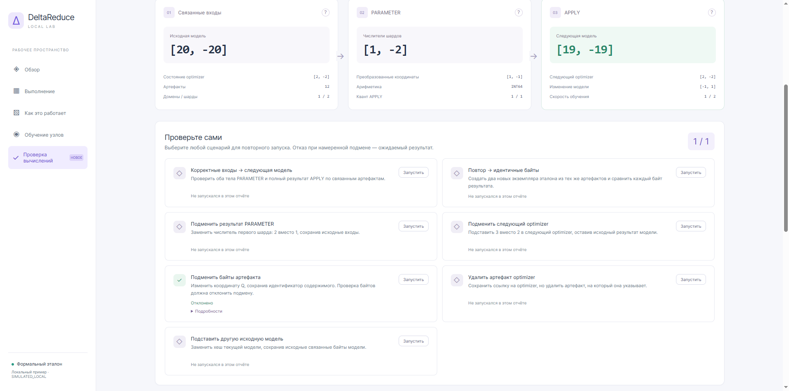
🔍 Click to inspect
Attack Scenario
Adversary Action
Protocol Enforcement
Payload Tampering
Altering tensor byte while spoofing CID
ARTIFACT_BYTES
PARAMETER Corruption
Manipulating shard numerator (2 vs 1)
ARITHMETIC_MISMATCH
Optimizer Corruption
Falsifying optimizer state in APPLY
ARITHMETIC_MISMATCH
Dangling Reference
Referencing deleted optimizer blob
ARTIFACT_MISSING
Stale Parent
Supplying obsolete checkpoint hash
PARENT_MODEL
«7 of 7» Means 7 Expected Invariants!
Essential talking point for the professor: «7 of 7» does not mean accepting bad data. It signifies that the reference engine successfully aborted 5 malicious tampering attacks and admitted 2 valid runs.
Distributed Training
4 Nodes. 10 Digits. 1 Result (MNIST Benchmark)
Live 4-worker distributed training across partitioned shards evaluated against a unified test set.
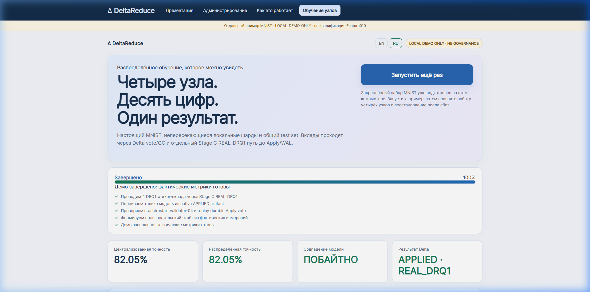
🔍 Click to inspect
Empirical Benchmark Metrics:
Centralized Accuracy
82.05%
Distributed Accuracy
82.05%
Weight Tensor Equivalence: BYTE-EXACT
Protocol Status: APPLIED · REAL_DRQ1
Accuracy vs Byte-Exactness:
82.05% (Accuracy) is statistical classification performance on MNIST test images. BYTE-EXACT is cryptographic parity: the trained model tensors produced via DeltaReduce consensus are bit-for-bit identical to centralized training.
Fault Tolerance & WAL
Node Crash Resilience & WAL Replay Recovery
Empirical validation of validator crash-recovery and schema contract enforcement.
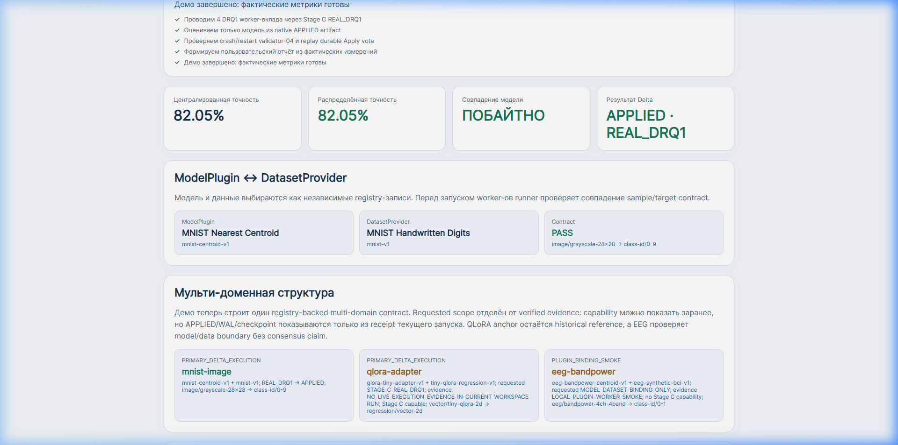
🔍 Click to inspect
Crash & Recovery Protocol Trace:
validator-04 is forcibly terminated mid-round.
The remaining 3 nodes maintain a valid quorum (3/4 ≥ 2f + 1) and advance the consensus round.
Upon restart, validator-04 replays its append-only Write-Ahead Log (WAL).
The node executes Replay Durable Apply Vote, re-synchronizing with zero state forking.
Schema Contracts: ModelPlugin & DatasetProvider
Before launching workers, the runner strictly validates input/output tensor contracts:
Dispatching training jobs, monitoring telemetry, and validating execution receipts.
🔍 Click to inspect
End-to-End Admin Workflow:
Campaign: Created Morning Demo campaign to isolate experiments.
Workload: Selected tabular-10gene-phenotype-v1 model on synthetic-10gene-cohort-v1.
Live Execution: Dispatched job presentation_demo to the Python Worker.
Receipt: Downloaded signed execution receipt containing SHA-256 digests and metrics.
What Does a Receipt Attest?
The receipt cryptographically proves that a specific worker process completed execution of the requested workload on CPU. In PLUGIN_BOUNDARY mode, it is an execution proof, not a BFT consensus certificate.
Extensibility
SDK Architecture: Building Custom Plugins
Standardized interface contracts for integrating arbitrary machine learning models.
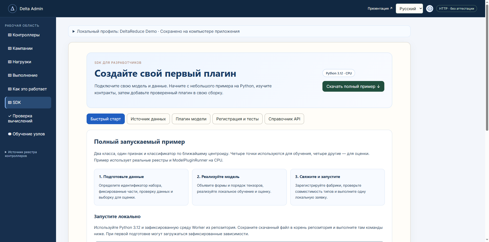
🔍 Click to inspect
Two Mandatory SDK Contracts:
DatasetProvider: Manages dataset schemas, partitioning into local training splits, and supplying an isolated evaluation set.
ModelPlugin: Declares parameter schemas, executes local optimization steps (train_step), applies external consensus deltas (apply_checkpoint), and computes evaluation loss (evaluate).
Extensibility for Academic Research:
The downloaded sdk_plugin_example.py serves as an operational starting point. Researchers can plug in custom models without altering the underlying consensus protocol.
Academic Rigor
Scientific Boundaries: Feature010 Readiness
Distinguishing empirical proofs of concept from production qualification.
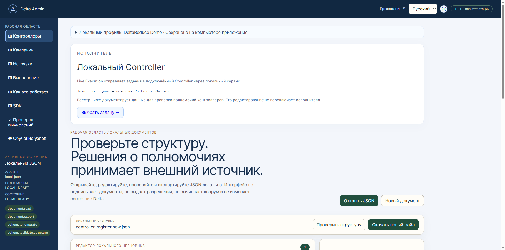
🔍 Click to inspect
Dimension
Current Empirical Testbed
Production Requirement (Feature010 GO)
Environment
SIMULATED_LOCAL
Multi-region wide area network (Real WAN Gate D)
Worker Engine
Python Worker on CPU
Native C++ / CUDA hardware acceleration
Validators
Local host processes / Docker
Independent sovereign authority nodes
Key Security
Ed25519 keys in shared profile
Hardware Security Modules (HSM)
Qualification
gate_eligible=false
Formal certified BenchmarkResultQC(GO)
Conclusion for the Defense:
The testbed rigorously validates the algorithmic and mathematical soundness of DeltaReduce, while transparently documenting current operational boundaries.
Research Proposal
Proposed Master's / Bachelor's Thesis Topic
Concrete student research agenda under the professor's supervision.
Thesis Topic:
«Empirical Evaluation of Byzantine Robustness in DeltaReduce Deterministic Consensus Under Coordinated Gradient Poisoning on Heterogeneous Biomedical Cohorts»
1. Data & Task
Construct a DatasetProvider for public cancer genomics cohorts (e.g., TCGA expression matrices) partitioned across independent clinical domains.
2. Model & Quantization
Implement a ModelPlugin multilayer perceptron supporting fixed-point INT64 quantization, evaluating precision trade-offs against FP32.
3. Byzantine Attacks
Simulate up to f adversarial workers mounting coordinated Sign-Flip and Gaussian poisoning attacks to quantify model F1-score retention under BFT consensus.